10 部片单 · 恐怖 / 科幻 / 惊悚 / 悬疑 / 剧情
| # | 片名 | 类型 | 评分 / 状态 |
|---|---|---|---|
| 01 | M就是凶手 | 惊悚 / 犯罪（德国表现主义 · 连环杀手开山 · 早期有声片） | 8.3 / 100% / 8.3 |
| 02 | 吸血鬼 | 恐怖 / 悬疑（超现实主义 · 早期有声片） | 7.7 / 98% / 7.4 |
| 03 | 德古拉 | 恐怖 / 哥特（环球怪物宇宙起点 · 有声恐怖片开端） | 7.2 / 96% / 71 |
| 04 | 化身博士 | 惊悚 / 科幻 / 剧情（人格分裂 · 前法典时期） | 8.1 / 93% / 7.7 |
| 05 | 科学怪人 | 科幻 / 恐怖（环球怪物 · 影史科幻恐怖开山） | 7.5 / 94% / 91 |
| 06 | 金刚 | 科幻 / 冒险 / 惊悚（定格动画开山 · 怪兽片源头） | 7.7 / 97% / 92 |
| 07 | 狼人 | 恐怖 / 剧情（环球怪物 · 宿命悲剧） | 7.2 / 91% / 72 |
| 08 | 猫人 | 恐怖 / 惊悚（RKO · 瓦尔·卢顿单元 · 心理暗示派） | 7.3 / 92% / 85 |
| 09 | 第七个受害者 | 恐怖 / 悬疑（RKO · 瓦尔·卢顿单元 · 存在主义） | 6.6 / 96% / 6.7 |
| 10 | 煤气灯下 | 悬疑 / 惊悚 / 剧情（心理操纵 · 奥斯卡影后） | 8.3 / 94% / 78 |
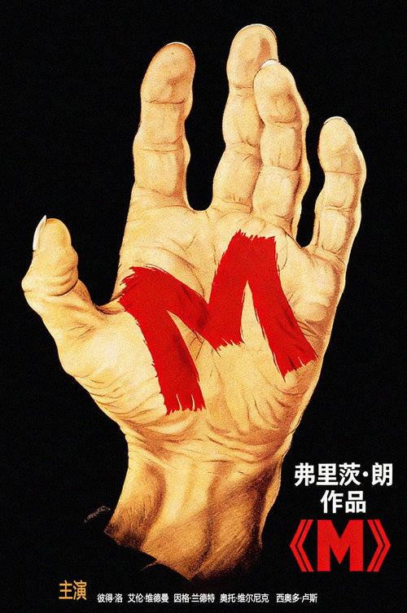
M就是凶手 M (1931)
「我没法控制自己……你们要拿我怎么办？」
剧情梗概
柏林城里接连有小女孩失踪。警察全城搜捕、反复突击检查，把黑帮的生意搅得一塌糊涂，于是黑帮决定自己动手——他们动员了城里所有的乞丐，布下一张警察够不着的网。卖气球的盲丐听见一段口哨，认出了那个买过气球的人；同伙在他背后用粉笔写下一个字母：M。被逼进一间办公楼的地下室之后，凶手面对的不是法庭，而是黑帮和乞丐私设的审判席。
亮点
- 弗里茨·朗的第一部有声片，也是影史上第一部以连环杀手为主角的电影。片名只有一个字母——那个被写在凶手背上的 M。
- 彼得·洛当时 26 岁、主要演喜剧，被选来演儿童杀手一度让制片方觉得荒唐。他只靠表情和一段三十秒的独白，就演完了整部片最重的那场戏。
- 全片几乎没有配乐：唯一的旋律是凶手自己哼的《在妖王宫中》（格里格），口哨是这部片的真正线索，也是电影史上最早的「声音标记」之一。
- 朗大量使用空镜头与声音转场：孩子失踪后，镜头停在滚落的皮球、飘走的气球、空荡的楼梯间——不拍凶手，只拍缺席。
- 剧本据说是朗与妻子特娅·冯·哈堡走访柏林警局、查阅真实案件档案后写成的；拍摄期间一度传言片场里有真警察卧底。
- 纳粹上台后，朗（犹太裔）离开德国；本片的剪辑与叙事手法被后来的黑色电影整套继承。
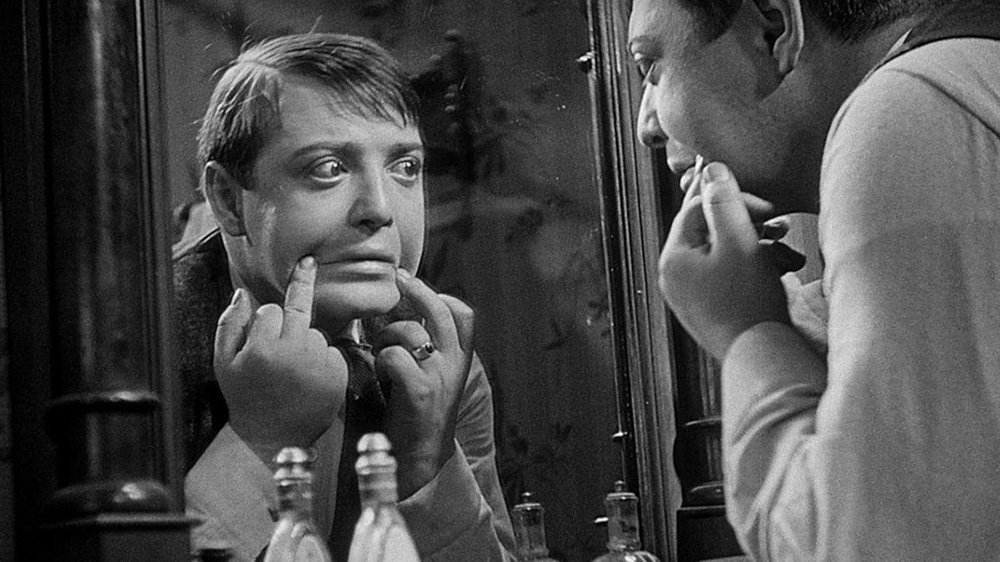
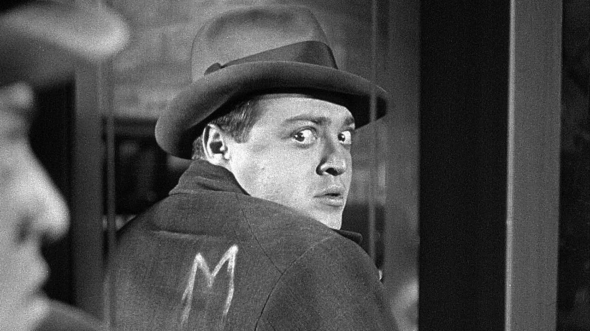
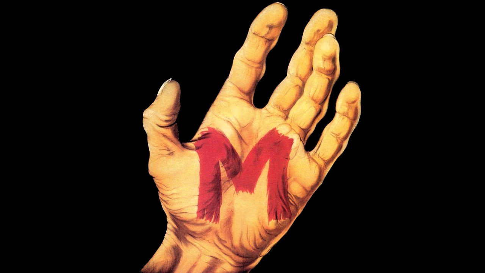
导演与主创 · 他们的历史作品

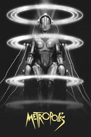
大都会 大内幕
大内幕 血红街道
血红街道 绿窗艳影
绿窗艳影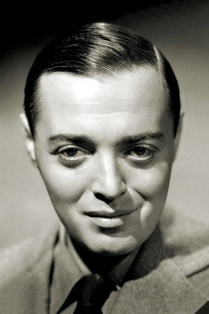
 卡萨布兰卡
卡萨布兰卡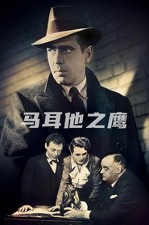
马耳他之鹰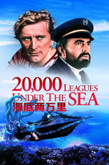
海底两万里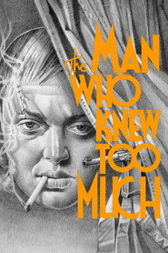
擒凶记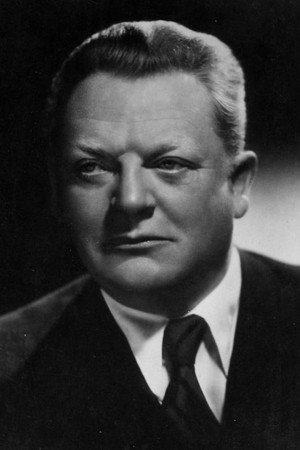
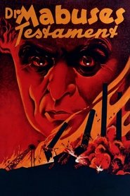
马布斯博士的遗嘱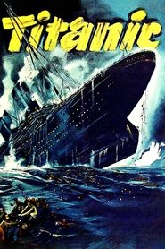
泰坦尼克号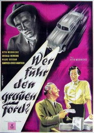
谁开走了那辆灰色福特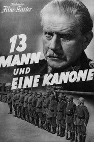
十三个人与一门炮短评（轻微剧透）
它最厉害的地方是把「正义」这件事拆成了两条线：警察在楼上按程序办案，黑帮在楼下按自己的规矩审判，两边用的是同一套理由——为了保证孩子安全。于是观众被推到一个很不舒服的位置：你希望凶手被抓住，但你不希望是这些人抓住他的。轻微剧透：结尾那场地下室审判是整部片的重心。凶手不是被写成怪物，他被写成一个人：他哭着说自己控制不住，说脑子里有个声音一直在逼他。这一刻真正可怕的不是他，是围着他的人——他们给他的不是审判，是处决。朗在最后一行字之前把镜头切给母亲：「我们本该更好地看护我们的孩子。」这句话把整部片从罪案片抬到了别的地方：它问的不是凶手该不该死，是一个社会在什么时候开始只想着惩罚、忘了照看。
为什么值得一看
喜欢《十二宫》《沉默的羔羊》《杀人回忆》这类罪案片的观众；想看有声片刚出现时导演怎么用「声音」讲故事的电影爱好者。黑白，无血腥直拍，但压迫感极强。内地未引进，流媒体与修复版碟片可看。
吸血鬼 Vampyr
「什么是死？和活着没有分别。」
剧情梗概
迷恋超自然的青年阿兰·格雷住进库尔唐皮埃尔村的一家小旅店。夜里有人把一个纸包放到他桌上，上面写着「我死后才能打开」。随后他在庄园里目睹那位老人被枪杀，又看见自己的影子脱离身体、自己走开。老人有两个女儿，其中一个叫蕾欧娜，正在被某种东西一点点吸干。
亮点
- 德莱叶的第一部有声片，但他几乎放弃了「正常录音」：大量对白是后期用极轻的气声补的，德语、法语、英语三个版本各拍各的。原始德语与法语声底均已佚失，今天的版本是多份残卷拼出来的。
- 故事骨架来自谢里丹·勒·法努 1872 年的中篇《卡米拉》——比《德古拉》早 25 年，也是最早的女性吸血鬼故事之一。
- 摄影鲁道夫·马泰在镜头前蒙了一层薄纱，让整部片像隔着一层眼皮在看世界。那个著名的「影子自己走开」的镜头，是让演员和影子分开拍再合成的。
- 全片最著名的一段是男主被活埋：摄影机被放进棺材里，从里面拍他透过玻璃看到的天空与倒退的树影。这是主观镜头最早、也最极端的一次使用。
- 出钱的人是尼古拉·德·贡兹堡男爵，他同时也是男主角（化名 Julian West）。
- 1932 年柏林首映时观众当场起哄。今天它在烂番茄有 98%，《纽约客》的理查德·布罗迪称它「或许是有史以来最有效、也最激进的超现实主义电影」。
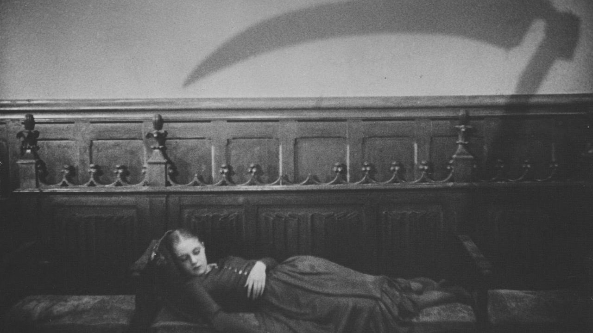
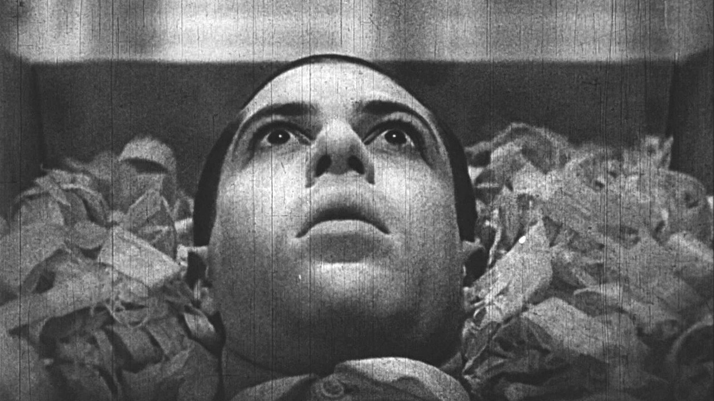
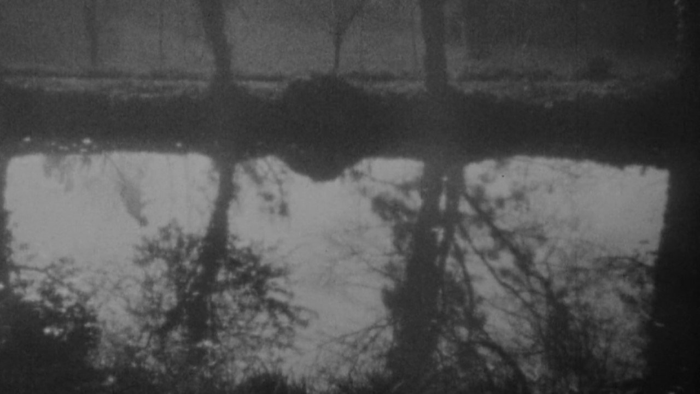
导演与主创 · 他们的历史作品
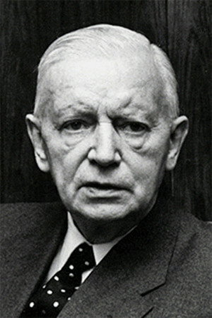
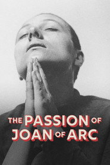
圣女贞德蒙难记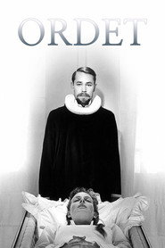
词语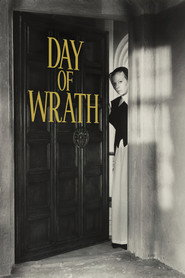
复仇之日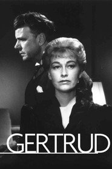
葛楚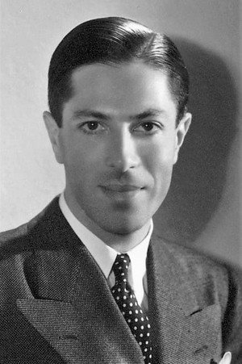
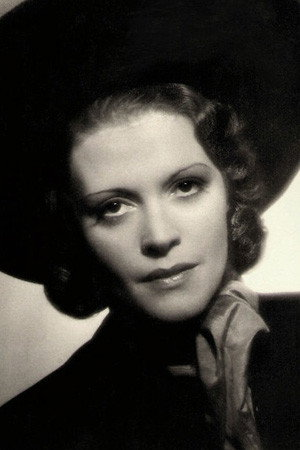
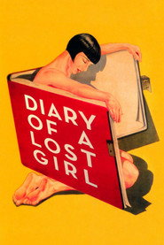
迷失少女日记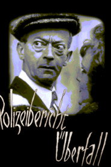
Accident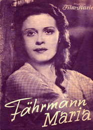
船夫玛丽亚短评（轻微剧透）
《吸血鬼》不太像一部电影，更像一场没醒透的梦。德莱叶刻意把所有「可以让你跟上剧情」的东西都拿走了：因果关系、时间顺序、甚至一半的对白。你只能跟着阿兰在这个村子里走，看见什么算什么。这当然会让人不耐烦——1932 年的观众就是这么反应的。但它的逻辑其实很清楚：如果你连「自己是活的还是死的」都分不清，那你就明白了。轻微剧透：片中最惊人的一场不是吸血，是阿兰被钉进棺材、从里面往外看的那段。德莱叶把摄影机放进了棺材里，于是观众第一次用一个死人的视角看世界——天空、枝影、抬棺人的脸一点点退走。这也是整部片的题眼：它要问的不是「有没有吸血鬼」，而是「死是什么感觉」。答案是：和活着没有分别。
为什么值得一看
喜欢《圣女贞德蒙难记》《词语》这类德莱叶作品，或《穆赫兰道》《内陆帝国》这类梦逻辑电影的观众；想看有声片初期最激进的形式实验的人。黑白，节奏极慢、叙事松散，需要耐心。内地未引进，流媒体可看。
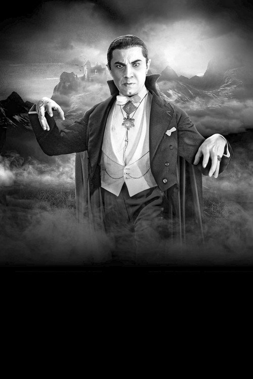
德古拉 Dracula
「我从不喝……酒。」
剧情梗概
地产经纪人伦菲尔德来到特兰西瓦尼亚，为德古拉伯爵办理伦敦的房产。伯爵催眠了他，随一艘船来到伦敦，住进修道院旁的宅子，然后开始一个接一个地吸干年轻女子。露西死了，又在夜里自己站起来。轮到米娜的时候，范海辛认出了这位客人究竟是谁。
亮点
- 贝拉·卢戈西原本是舞台剧演员，1927 年起在百老汇演了 261 场德古拉。环球最初想找朗·钱尼，他 1930 年病逝，角色才落到卢戈西头上——他一生只在银幕上穿过一次这件斗篷（1948 年《两傻大战科学怪人》是另一次）。
- 全片几乎没有配乐，只有《天鹅湖》的片段和片尾一点点。制片方担心音乐会让观众觉得「不真实」。这反而让它比同期有声片更安静、更僵，也更冷。
- 摄影是卡尔·弗罗伊德——两年后他自己执导了《木乃伊》。开场的特兰西瓦尼亚段落用的是巨大的实景布景与烟雾，罗杰·伊伯特称它「庄严、肃穆、狠」。
- 白天布朗宁拍英语版，夜里乔治·梅尔福德用同一套布景拍西班牙语版《Drácula》。西语版一度失传，1990 年代在古巴找到拷贝，如今被认为某些镜头比英语版更好。
- 环球在 1931 年靠它起死回生：成本 35.5 万美元，北美票房约 70 万。同年年底又推出《科学怪人》，环球怪物宇宙就此开场。
- 口碑分裂得很明显：烂番茄 96%，Metacritic 只有 71，豆瓣 7.2。分歧基本集中在中段——从特兰西瓦尼亚搬到伦敦之后，它变成了一部被拍在舞台上的舞台剧。
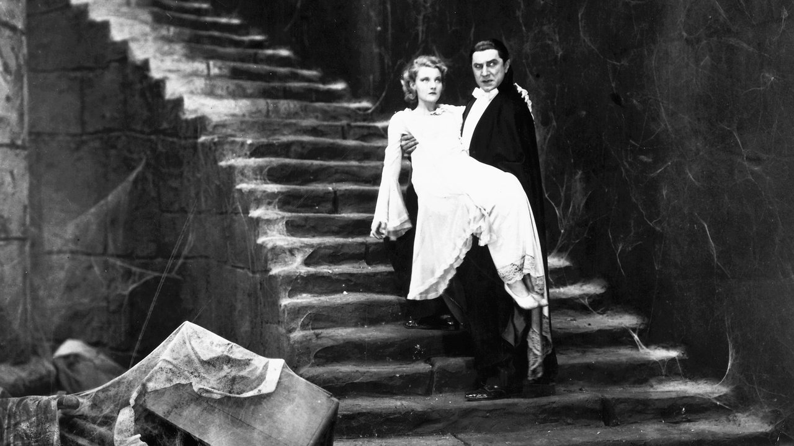
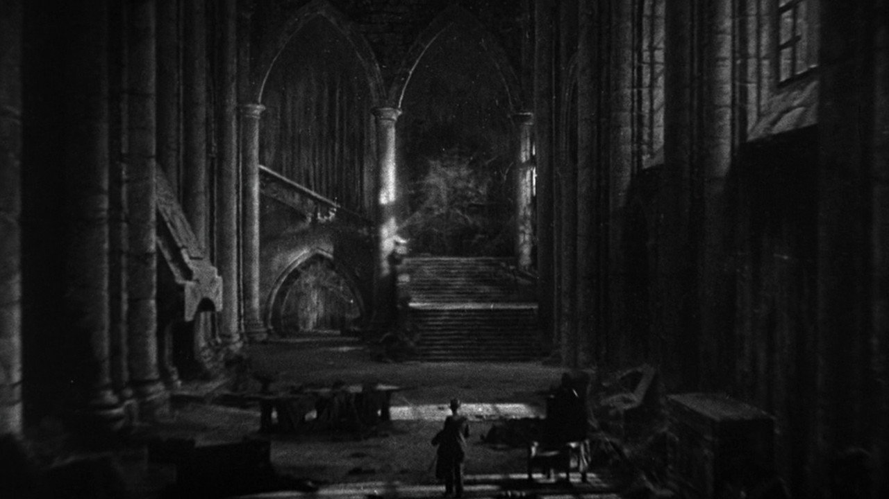
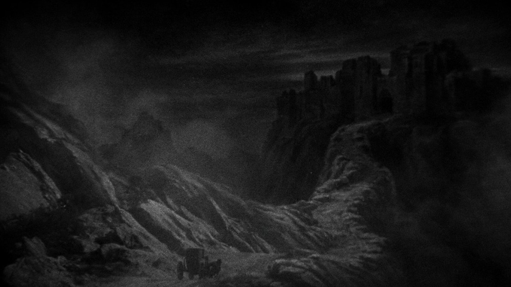
导演与主创 · 他们的历史作品
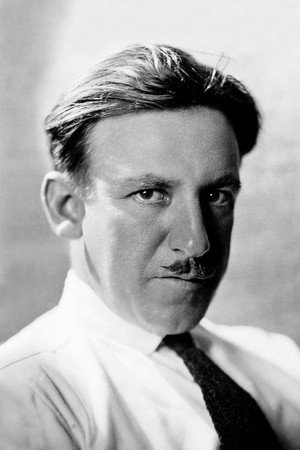
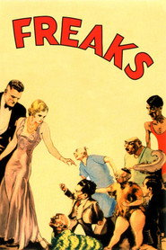
畸形人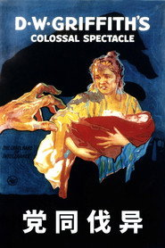
党同伐异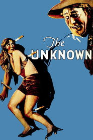
未知者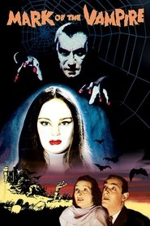
吸血鬼的印记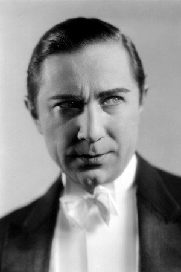
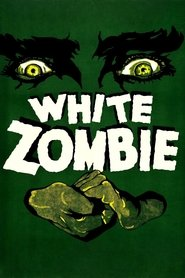
白魔鬼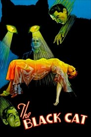
黑猫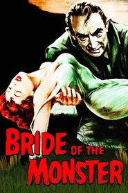
大话原子人之怪兽娶亲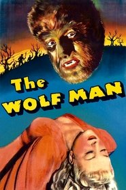
狼人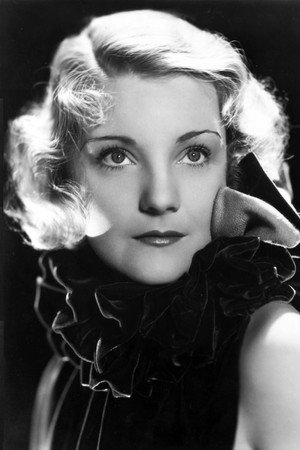
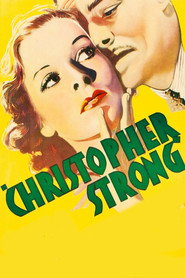
情天飞絮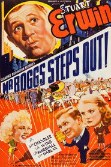
博格斯先生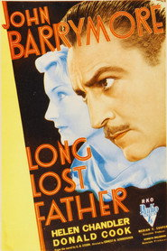
Long Lost Father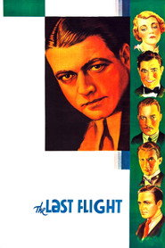
The Last Flight短评（轻微剧透）
《德古拉》今天看有两个部分，而且它们不太像同一部电影。前 25 分钟在特兰西瓦尼亚：雾、巨石、倾斜的布景、卢戈西缓慢到不自然的说话节奏——这段至今仍然是哥特恐怖的教科书。之后到了伦敦，整部片突然缩进了客厅里，人物开始站着说话。轻微剧透：真正撑住的还是卢戈西。他几乎没有动作，靠停顿和眼神把「这不是人」这件事说完了；范海辛与他第一次面对面那场戏，两人隔着一张桌子互相试探，台词很少，压迫感全在节奏里。所以即便中段确实拖沓，它仍然是有声恐怖片的起点——后面八十年里所有吸血鬼的说话方式、走路方式和对待女性的方式，都是从这 75 分钟里长出来的。
为什么值得一看
喜欢《惊情四百年》《夜访吸血鬼》《德古拉》(2024) 这类吸血鬼作品的观众；想看恐怖片是怎么从默片过渡到有声的人。黑白，无血腥，中段节奏偏慢。内地未引进，流媒体可看。
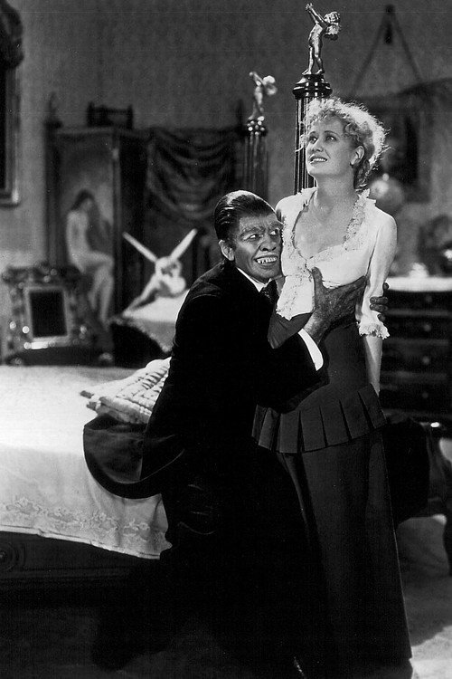
化身博士 Dr. Jekyll and Mr. Hyde
「你有没有过这种感觉——你心里住着两个人？」
剧情梗概
维多利亚时代的伦敦，杰基尔医生相信人身上的善与恶是可以分开的，他在实验室里配出了一种药，喝下去就变成另一个自己：海德。穆丽尔的父亲不许他们提前结婚，杰基尔在夜里以海德的身份出入酒吧；他救下的那个女人艾薇，后来成了海德最常去找的人。药效越来越快，他开始在大白天变形。
亮点
- 弗雷德里克·马奇凭此片拿下第 5 届奥斯卡影帝（与《舐犊情深》的华莱士·比里并列）。在史蒂文森这部小说的所有改编里，这是唯一一次拿下男主角奖。
- 变身不靠机关：马莫利安用一套彩色滤镜依次遮挡不同颜色的油彩，靠跳切 + 换妆完成。他和摄影师卡尔·斯特鲁斯直到去世都没有完整说明过怎么做到的。
- 开场近三分钟是完全的主观镜头——摄影机就是杰基尔的眼睛，直到他第一次在镜子里看见自己，观众才第一次「离开」他的身体。1931 年，这极其大胆。
- 米高梅 1941 年重拍时把 1931 年这版的版权买下并雪藏了几十年，所以它在很长一段时间里根本看不到，直到 1970 年代才重新被拿出来。
- 海德的设计是刻意的「返祖」：多毛、塌鼻、猿化。它比「丑」更先让人想到「低等」——这是 1931 年对「恶」最直白的一套视觉方案。
- 海斯法典全面执行后，本片被剪掉约十分钟（主要是艾薇与马奇的段落），后来才逐步修复。今天流通的版本长度不统一。
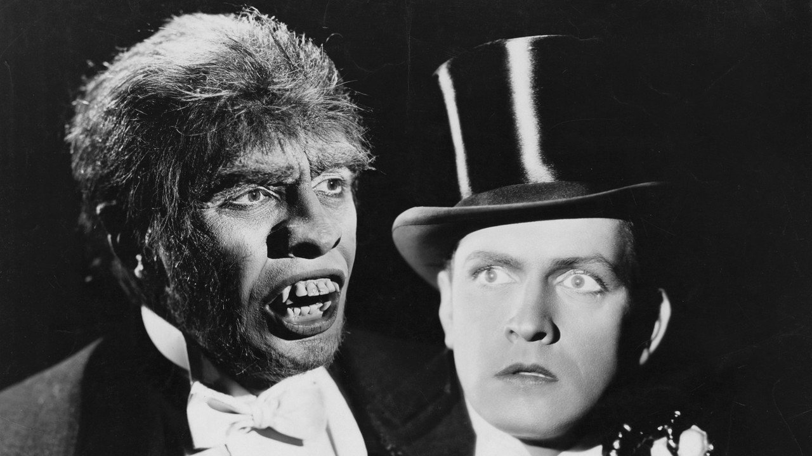
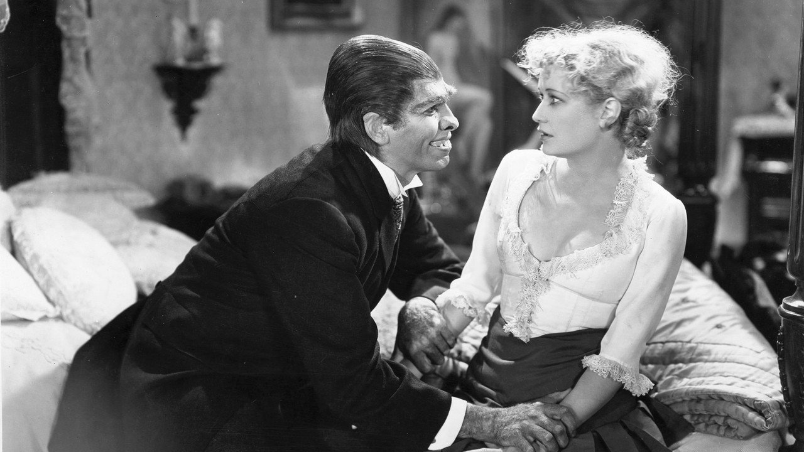
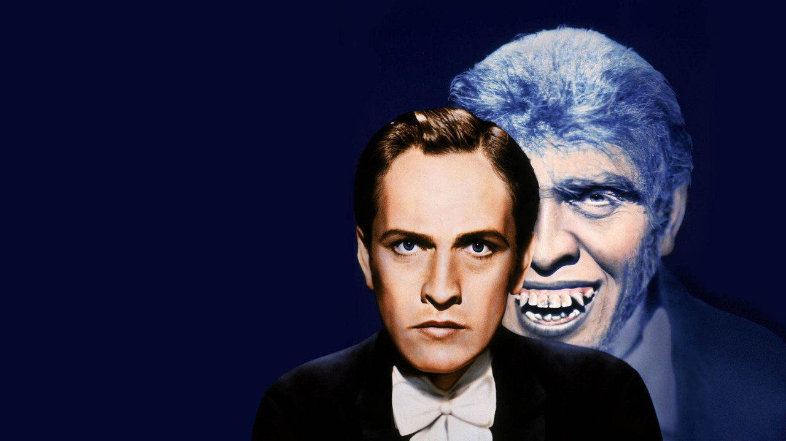
导演与主创 · 他们的历史作品
 黄金时代
黄金时代短评（轻微剧透）
这一版《化身博士》最了不起的地方，是它把「分裂」拍成了欲望，而不是疾病。杰基尔喝药不是为了做坏事，是因为他受够了做一个体面人——穆丽尔的父亲、医院的同事、他自己的实验室，每一样都在教他什么该做。海德一开始只是他的出口。轻微剧透：真正让人不舒服的是他堕落的速度。他第一次去找艾薇时还是个救了她的人，第二次已经成了占有她的人。马奇演这两个人用的完全是两套身体：杰基尔是直的、收着的，海德是塌的、往前探的。到最后他不需要药就会变形——也就是说，问题从来不在药里。马莫利安在这里把「恶」定义成了「被允许放纵的那部分自己」，这个判断比电影本身活得还久。
为什么值得一看
喜欢《黑天鹅》《搏击俱乐部》《小丑》这类「另一个自己」题材的观众；对前法典时期好莱坞（尺度比之后二十年都大）有兴趣的人。黑白，含暴力与性暗示，心理压迫较强。内地未引进，流媒体可看。
科学怪人 Frankenstein
「它活了！」
剧情梗概
亨利·弗兰肯斯坦从墓地与绞刑架上收集尸块，在一座塔楼里拼出一具人体，只等一场雷暴把它激活。他成功了，然后立刻后悔。造物从塔里逃出去，在乡间游荡：先遇到一个小女孩，再遇到举着火把的村民。
亮点
- 波利斯·卡洛夫原本排在演员表第四位，首映时甚至以「？」署名。上映后一夜成名——那张平顶、螺栓脖子、绿灰色皮肤的脸，是影史被复制次数最多的形象之一。
- 妆是杰克·皮尔斯做的：每天上妆四小时、卸妆两小时，光头部就有数十个部件。那双下垂的眼皮是用蜡一小片一小片贴上去的，卡洛夫几乎睁不开眼——也正是这个限制，让它看起来「还没完全醒过来」。
- 开场有一段由爱德华·范·斯隆念的「观影警示」，1930 年代重映时被剪掉，长期失传。
- 影片原本给造物起名「亚当」，后来被剪掉——制片方认为观众更愿意接受「怪物」。
- 1931 年 11 月上映，成本约 26 万美元，最终全球票房约 1200 万，是环球当年最赚钱的一部，也把公司从德古拉之后的下滑里拉了回来。
- 1991 年入选美国国家影片登记表；AFI 百年百大惊悚片第 56 位；「它活了」入选 AFI 百大台词第 49 位。
导演与主创 · 他们的历史作品
短评（轻微剧透）
看《科学怪人》之前最好先把「弗兰肯斯坦是怪物的名字」这件事忘掉。这部片真正厉害的地方，是它让怪物成了全片最无辜的那个：他不会说话，只会伸手，先伸手向光，再伸手向人。轻微剧透：最重的一场是湖边。怪物遇到小女孩玛丽亚，两人一起把花扔进水里看它漂。这个游戏是平等的——直到他伸手去够她。惠尔在这里没有拍残忍，只拍了一个还不会估算自己力气的东西。后面的火把、风车、火，都是这次误会的代价。所以这部片虽然只有 71 分钟，却把「造物者责任」这件事说完了：亨利逃跑、隐瞒、然后又想当英雄，而从头到尾没有一个人问过那个东西「你是谁」。
为什么值得一看
喜欢《银翼杀手》《人工智能》《普罗米修斯》这类「造物与造物主」题材的观众；想知道环球怪物宇宙具体长什么样的人。黑白，含暴力与 drowning 场景，情绪冲击中等。内地未引进，流媒体可看。
金刚 King Kong
「不是飞机。是美女杀死了野兽。」
剧情梗概
大萧条时期的纽约，走投无路的导演卡尔·登汉姆带着摄制组、一个刚在街上招来的女演员安·达罗和一船人出港，去拍一部「从来没人拍过的电影」。他们在一座地图上都没有的荒岛登陆，发现了一道隔开文明与某种别的东西的高墙。墙那边是一头巨猿，岛上的人要拿一个女人换它不发作。登汉姆决定把它带回纽约展览。
亮点
- 定格动画由威利斯·奥布莱恩完成，金刚的模型只有约 46 厘米高：金属骨架、橡胶外壳、兔毛。拍一格动一下，全片数千格。
- 金刚与霸王龙搏斗那场戏拍了约七周；岛上的恐龙、树、悬崖全是模型与绘景。今天看得出接缝，但当年观众是从座位上站起来看的。
- 1933 年 3 月 2 日在纽约无线电城音乐厅首映，4 月 7 日全国公映。首周票房约 9 万美元，直接把濒临破产的雷电华（RKO）救了回来。
- 麦克斯·斯坦纳的配乐是影史第一份「全程主导情绪」的原创配乐之一——此前电影多用现成曲库拼贴。此后所有大片配乐都按这个逻辑写。
- 结尾那句台词原本还有后半句被剪掉了：「——不是野兽，是美女杀死了野兽。」（完整版是「是美女杀死了野兽」）。
- 需要如实说：岛上的原住民由非裔美国人和亚裔演员扮演，这不是选角随性，是 1930 年代好莱坞的种族观。近年所有关于本片的讨论都绕不开这一层，它也确实影响了很多人对这部片的第一印象。
导演与主创 · 他们的历史作品
短评（轻微剧透）
《金刚》今天最容易被当作「特效史前史」来看，但它真正厉害的地方不在特效，在结构：它先让你爱上一个怪物，再让你看着它被展览。前半段是探险片，中段是感情戏，到了纽约之后，所有的镜头角度突然变成了观众席的角度——你也成了那些买票的人。轻微剧透：登汉姆那句「不是飞机，是美女杀死了野兽」是这部片的自我总结，但它是错的。杀死金刚的是登汉姆：他先把它从岛上带走，再把它放在台上，最后还想在闪光灯前留一张照片。奥布莱恩的定格动画给了它一个人类没有的东西——犹豫。它把安放下、回头、再回头，这几秒是整部片真正的重量。到今天所有怪兽片（包括《哥斯拉》《侏罗纪公园》）都在抄这个结构，只是很少抄到这一层。
为什么值得一看
喜欢《哥斯拉》《侏罗纪公园》《环太平洋》这类怪兽片、想看源头的人；对定格动画与模型特效有兴趣的观众。黑白，含坠落与暴力画面，含 1930 年代的种族呈现需留意。内地未引进，流媒体可看。
狼人 The Wolf Man
「月圆之夜，狼血会醒来。」
剧情梗概
拉里·塔尔博特从美国回到威尔士的老家，和多年不和的父亲和解。夜里他在荒原上救下一个被袭击的女孩，自己却被咬了一口。吉普赛女人玛莱娃告诉他：咬你的不是狼，是狼人——现在你也是了。拉里不信，直到下一个满月。
亮点
- 编剧科特·西奥德马克把狼人写成了诅咒而不是疾病：五角星、银弹、狼毒草。那句流传最广的谚语「Even a man who is pure at heart...」就是从本片出来的。
- 小朗·钱尼（默片巨星朗·钱尼之子）是靠这部片真正站住的——此前他演了十年配角和 B 级片。此后他与「狼人」这个角色绑了二十年。
- 变身是逐格拍的：每次只拍几帧，重新上妆、重新贴毛，一场戏要拍好几天。银幕上几秒钟，钱尼在化妆椅上坐了近十个小时。
- 克劳德·雷恩斯演父亲约翰爵士——八年前他在《隐形人》里演的是那个疯狂的科学家。他是环球怪物片里最稳的一张脸。
- 贝拉·卢戈西在这里演一个名叫「贝拉」的配角，戏份不多，却是当年宣传时最大的卖点。
- 它是环球怪物系列里唯一一部把怪物从头到尾当成受害者写的片子：拉里没有做错任何一件事，他只是在错误的时间去了错误的荒原。
导演与主创 · 他们的历史作品
卡萨布兰卡短评（轻微剧透）
环球怪物片里，《狼人》是最像悲剧的一部。它不像《科学怪人》那样有造物者的自负可以谴责，也不像《德古拉》那样有明确的恶——拉里只是回家、只是想救人。轻微剧透：真正让人难受的在结尾。拉里终于说服父亲给自己戴上镣铐等天亮，父亲也终于信了，可他还是变了身；而第二天早上被发现的那具尸体，是父亲亲手打死的自己的儿子。影片没有留任何余地：没有解药，没有续命的机会，只有一句「下次月圆」。这也是为什么它在豆瓣只有 7.2 却在烂番茄有 91%——评论界看重的是它的宿命结构，普通观众多半受不了它一点希望都不给。
为什么值得一看
喜欢《闪灵》《女巫》《仲夏夜惊魂》这类宿命型恐怖的观众；想知道「狼人」这个类型的规则（五角星 / 银弹 / 满月）是从哪来的人。黑白，含袭击与变身画面，情绪偏沉。内地未引进，流媒体可看。
猫人 Cat People
「我从来没有碰过他。」
剧情梗概
塞尔维亚裔的时装画师伊莲娜在动物园认识船舶工程师奥利弗，两人很快结婚。但伊莲娜不肯同房：她相信家乡那个古老的传说——一旦动情，她会变成一头豹。奥利弗转向了同事爱丽丝。伊莲娜开始每天夜里在街上跟着她。
亮点
- RKO 给制片人瓦尔·卢顿三条铁律：成本不超过 15 万美元、片长约 70 分钟、片名由宣传部门先定好（《猫人》这个名字就是先有的，剧本后写）。他用这三条枷锁拍出了好莱坞最有文学性的恐怖片。
- 「卢顿巴士」(Lewton bus)：紧张到极点时突然一声巨响，结果是虚惊——这个套路就是从这里开始的，之后被抄了无数次，至今还在用。
- 全片没有一只豹真正出现在画面里。最吓人的两场戏是：爱丽丝夜里在公园墙边被跟踪（只有影子与脚步声），和游泳池边那一声不知道是什么的嘶吼。
- 成本 13.4 万美元，北美票房约 400 万，直接把 RKO 从破产边缘救了回来。
- 1993 年入选美国国家影片登记表；罗杰·伊伯特 2006 年把它列入「伟大的电影」，称它「以一种难以定义的、诡异的方式让人害怕」——因为性危险从头到尾只存在于暗示里。
- 导演雅克·图尔尼尔与摄影尼古拉斯·穆苏拉卡把 1940 年代的曼哈顿拍成了一片黑白的水。这是它和环球那些城堡布景最根本的区别：恐怖不在别处，就在公寓楼、游泳池和办公室里。
导演与主创 · 他们的历史作品
 漩涡之外
漩涡之外 恶魔之夜
恶魔之夜 源泉
源泉短评（轻微剧透）
《猫人》最反常识的一点是：它几乎没有恐怖画面，却把「欲望」拍成了会伤人的东西。伊莲娜不是怪物，她是一个被自己信以为真的传说困住的女人——她越爱奥利弗，越不敢碰他。轻微剧透：真正的高明在于你到最后也不确定她是不是真的会变。全片唯一一次「豹」的呈现是一串爪痕和一声叫，其余全靠影子。所以这部片可以有两种读法：一种是超自然，一种是一个移民女人在异国婚姻里的自我封闭——两条都成立，这正是卢顿想要的效果。也因为这样，它比同期任何一部怪物片都更接近今天的心理惊悚。
为什么值得一看
喜欢《闪灵》《遗传厄运》《灯塔》这类「看不见的恐怖」的观众；想知道希区柯克之外 1940 年代好莱坞还能把暗示做到什么程度的人。黑白，无血腥，含跟踪与惊吓段落。内地未引进，流媒体可看。
第七个受害者 The Seventh Victim
「我宁愿死，也不愿再这样活着。」
剧情梗概
玛丽从修女学校出来，到纽约找失踪的姐姐杰奎琳。她依次找到姐姐的丈夫、姐姐的合伙人、一家意大利餐馆，最后找到一群在格林威治村定期聚餐的体面人——他们是一个撒旦教团。杰奎琳曾经是其中一员，如今只想退出。教团的规矩很简单：自己了断，或者他们代劳。而「第七个受害者」还差一个人。
亮点
- 马克·罗布森的导演处女作——他此前是剪辑师，剪过《公民凯恩》和《豹人》。
- 金·亨特的银幕处女作。八年后她演《欲望号街车》，再往后演《人猿星球》里的齐拉。
- 撒旦教徒被写得极其平常：他们开餐馆、办沙龙、聊房租和邻居。真正让人发凉的是这份「中产」。
- 片中大量引用约翰·邓恩的诗——「不要问丧钟为谁而鸣」——给整部片罩了一层宿命感。
- 那场著名的淋浴戏（镜头只拍脚、门缝和水声）比《惊魂记》早 17 年。
- 它是卢顿九部片里最绝望的一部：没有救赎，没有解释，也没有一个像样的好结局。这也是它在豆瓣只有 6.6、烂番茄却有 96% 的原因——它考验的是你能不能接受一部不给出口的电影。
导演与主创 · 他们的历史作品
 人猿星球
人猿星球 失陷猩球
失陷猩球 逃离猩球
逃离猩球短评（轻微剧透）
《第七个受害者》是那种「当年没人看，现在被当成先驱」的片子。它几乎没有类型元素：没有怪物，没有血，没有一场真正意义上的追逐。它的恐怖全部来自一件事——那些想让杰奎琳死的人，全都是正常上班的体面人。轻微剧透：最狠的是杰奎琳这个角色。她不是被胁迫加入的，她是自己走进去的，因为她觉得活着没意思；等她想出来的时候，规矩不允许。结尾玛丽走出那栋楼，回到街上，什么事也没有发生——没有人被救，没有人被抓。罗布森把整部片收在一个什么都没解决的镜头里。这就是卢顿这批片最硬的地方：它们不提供安慰，只提供一句「人有时候就是这样」。也因此它注定小众——豆瓣 6.6 完全合理，但它值得被看一次。
为什么值得一看
喜欢《罗斯玛丽的婴儿》《仲夏夜惊魂》《神秘村》这类「日常里的邪教」题材的观众；能接受压抑、无解、不给出口的叙事的人。黑白，含自杀议题与抑郁情绪，请按自己状态选择。内地未引进，流媒体可看。
煤气灯下 Gaslight
「你又在想象了，宝拉。」
剧情梗概
著名歌剧女伶在自己家中被扼死，凶手没抓到，一批皇室赠送的珠宝也没找到。多年后，她的侄女宝拉与钢琴师格雷戈里结婚，搬回那栋空了多年的凶宅。格雷戈里把姨妈的东西全部封进阁楼，然后开始出事：画像不见了，胸针自己长腿跑进手提包，夜里阁楼有脚步声，煤气灯会无缘无故变暗。宝拉一点点确信：是自己疯了。
亮点
- 「Gaslighting」（煤气灯式操纵）这个词就是从这部片来的，今天已经是心理学与社会学的常用词，专指通过持续否认与扭曲事实，让对方怀疑自己的感知与理智。
- 英格丽·褒曼凭此片拿下第一座奥斯卡影后。她的演法很特别：不演「疯」，演「还在努力保持体面」——每一次崩溃前你都能看见她在往回收。
- 17 岁的安吉拉·兰斯伯里演女仆南希，银幕处女作，直接拿到奥斯卡最佳女配角提名。
- 改编自帕特里克·汉密尔顿 1938 年的舞台剧《煤气灯》（Angel Street）。米高梅翻拍时一度想销毁 1940 年英国版的底片以保证独占发行。
- 本片共 7 项奥斯卡提名，最终拿下最佳女主角与最佳黑白片美工置景两项。
- 阁楼那场戏是全片的轴心：格雷戈里为了找珠宝把整个阁楼翻遍了，可他对宝拉说的是「你从来没上去过，门锁着呢」。
导演与主创 · 他们的历史作品
卡萨布兰卡短评（轻微剧透）
看《煤气灯下》最难受的不是它在讲什么，是它的手法太常见了。格雷戈里从不吼、从不打，他只是每一次都温柔地更正宝拉的记忆：你记错了，你又忘了吗，你今天不太舒服吧。轻微剧透：全片真正的转折点不是宝拉发现真相，而是那句「如果我真的疯了，那我看见的就是假的」——到这一步她已经无法信任自己的任何判断。褒曼把这个过程演得非常具体：她不是越来越激动，而是越来越小声、越来越习惯先道歉。这也是为什么这部片在 1944 年之后变成了心理学名词：它精准地描述了一种不需要暴力的控制方式。结尾那场对峙之所以痛快，是因为宝拉第一次没有接他递过来的那句话。
为什么值得一看
喜欢《消失的爱人》《利刃出鞘》《消失的她》这类心理博弈的观众；想理解「煤气灯效应」这个词的出处与具体长相的人。黑白，无血腥，心理压迫贯穿全片。内地未引进，流媒体可看。